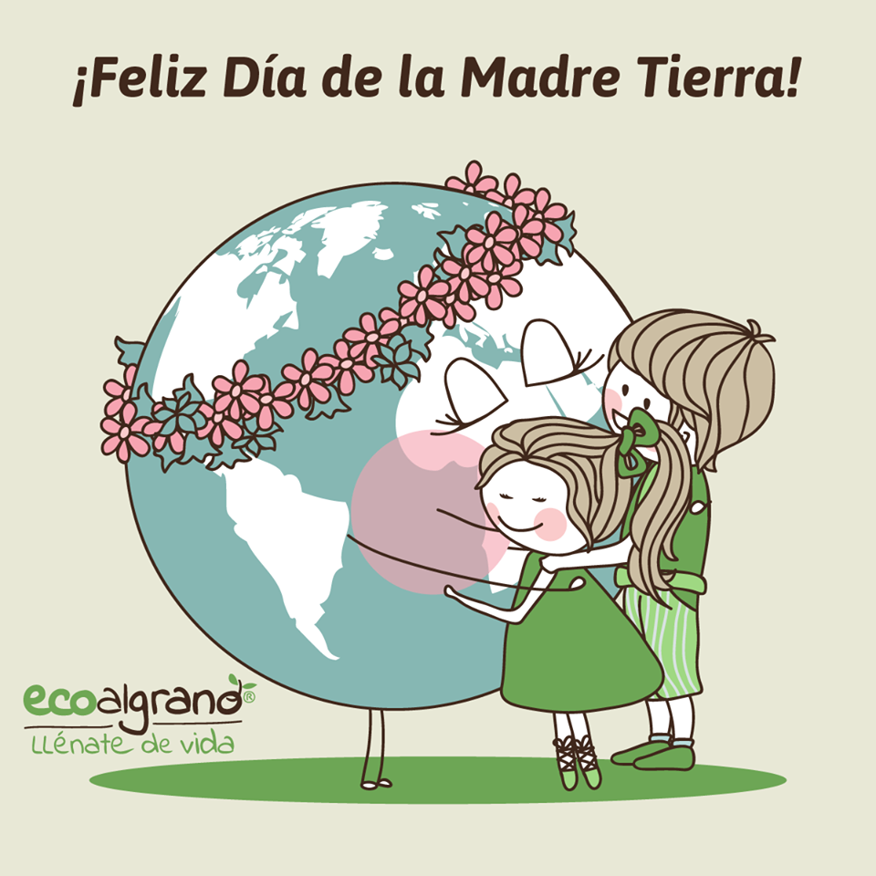
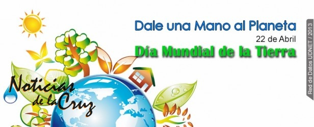
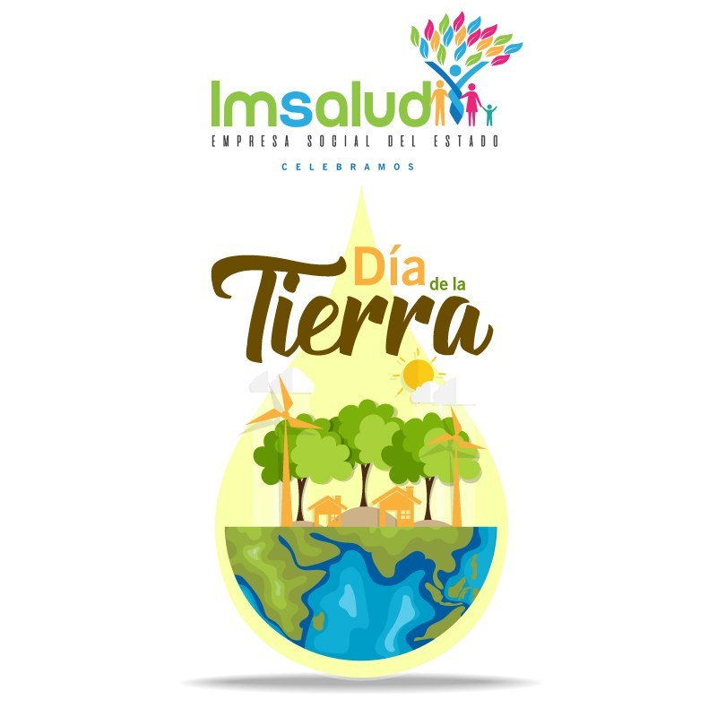

Día Internacional de la Madre Tierra 22 de abril
Realizado por:
Flores Rivera Montserrat
4° Semestre Grupo: "E"
Especialidad
Programación
Submódulo
Desarrolla Aplicaciones Móviles
Docente:
Lic. Jóse Antonio Gómez Hernandez


4° Semestre Grupo: "E"
Programación
Desarrolla Aplicaciones Móviles
Lic. Jóse Antonio Gómez Hernandez

El 22 de abril se celebra el Día Mundial de la Tierra. Esta fecha fue elegida porque el 22 de abril de 1970 una manifestación en Estados Unidos para que se creara en el Gobierno una agencia ambiental que trabaje sobre las problemáticas medioambientales.
Pero, ¿cuándo se celebró por primera vez y por qué se eligió ese día? La realidad es que el primer día de la Tierra fue en 1970, cuando el senador por el Partido Demócrata de EEUU y activista ecologista Gaylor Nelson promovió una gran movilización para visibilizar el movimiento medioambiental. Ese año logró que 20 millones de personas se manifestaran exigiendo respeto por el medio ambiente, un hito que contribuyó a asentar esta fecha, el 22 de abril, como el Día de la Tierra.

Cada 22 de abril celebramos en todo el mundo el Día de la Tierra con la voluntad de recordar a la población la importancia de nuestro planeta como la casa común de todos los seres que la habitamos. En palabras de la Organización de la Naciones Unidas, este día tiene como objetivo tratar de llegar a un equilibrio entre la viabilidad y la salud medioambiental y las necesidades sociales y económicas de la nuestra y de las generaciones futuras.
El impulsor de la protesta fue el senador y activista ambiental Gaylord Nelson, quien convocó a miles de universidades, escuelas primarias y secundarias entre otras comunidades a participar del pedido. Gracias a la expresión social el Ejecutivo estadounidense creó Environmental Protection Agency (Agencia de Protección Ambiental) y varias leyes de protección del medio ambiente.
Dos años después se llevó adelante el encuentro a nivel mundial: Cumbre de la Tierra de Estocolmo.
La intensión es sensibilizar a la humanidad de que es parte del planeta Tierra y sus huellas marcarán el destino del mundo, por eso reducir (el consumo), reciclar y reutilizar objetos es la forma en que cada uno día a día puede colaborar para evitar la contaminación ambiental.
Ciudades Verdes
Las Naciones Unidas proponen generar "Ciudades Verdes": "El objetivo del Día de la Tierra es movilizar a millones de personas para lograr un medio ambiente saludable y sostenible. En la actualidad, más de la mitad de la población mundial vive en las ciudades. A medida que la población urbana crece y los efectos del cambio climático empeoran, nuestras ciudades deben evolucionar.
Es hora de que invirtamos en energías renovables y en eficiencia energética, reconstruyamos nuestras ciudades y empecemos a resolver el problema del cambio climático".
«Madre Tierra» es una expresión común utilizada para referirse al Planeta Tierra en diversos países y regiones, lo que demuestra la interdependencia existente entre los seres humanos, las demás especies vivas y el planeta que todos habitamos.
La Tierra y sus ecosistemas son nuestro hogar. Para alcanzar un justo equilibrio entre las necesidades económicas, sociales y ambientales de las generaciones presentes y futuras, es necesario promover la armonía con la naturaleza y el planeta.
Celebramos el Día Internacional de la Madre Tierra para recordar que el planeta y sus ecosistemas nos dan la vida y el sustento. Con este día, asumimos, además, la responsabilidad colectiva, como nos recordaba la Declaración de Río de 1992, de fomentar esta armonía con la naturaleza y la Madre Tierra.
Este día nos brinda también la oportunidad de concienciar a todos los habitantes del planeta acerca de los problemas que afectan a la Tierra y a las diferentes formas de vida que en él se desarrollan.
El Día de la Tierra no es sin embargo un día en el que se realizan actos conmemorativos y simbólicos simplemente. Por el contrario, es un día en el cual se insta a todos lo ciudadanos y, especialmente, a los diferentes gobiernos, a tomar actitudes más ecológicas y a preservar el medio que nos rodea.
El 23 de abril de 2018 se realizó en la sede de las Naciones Unidas en Nueva York, el 8° Diálogo Interactivo sobre Armonía con la Naturaleza, en ocasión de la conmemoración del Día Internacional de la Madre Tierra.
El evento fue convenido por el Presidente de la Asamblea General, Miroslav Lajcak, quien destacó la importancia del Diálogo para intercambiar ideas sobre desarrollo y patrones de producción y consumo sostenibles en armonía con la naturaleza.
Durante la jornada, se discutió sobre cómo los marcos legales y económicos de la Jurisprudencia de la Tierra impactan la implementación de patrones de producción y consumo sostenibles en Armonía con la Naturaleza.
El Diálogo se realizó con el objetivo de inspirar a los ciudadanos y las sociedades a reconsiderar la relación que mantienen con la naturaleza, acorde a la meta 12.8 de los Objetivos de Desarrollo Sostenible con respecto a los patrones de consumo y producción sostenibles.
Mejorar la base ética de la relación entre la especie humana y la Tierra en el contexto del desarrollo sostenible no es solo beneficioso, sino también necesario.
Este día nos brinda también la oportunidad de concienciar a todos los habitantes del planeta acerca de los problemas que afectan a la Tierra y a las diferentes formas de vida que en él se desarrollan.
La gestión integrada de paisajes requiere comprender los diferentes impactos del uso de la tierra y equilibrar los intereses a menudo contradictorios de los diferentes grupos involucrados.
Imaginemos que usted forma parte del gobierno del país X en África subsahariana. Desea cumplir con el Objetivo de Desarrollo Sostenible No. 1 que reza: “acabar con la pobreza en todas sus formas en todas partes".
Sin embargo, es consciente de la necesidad de implementar todos los 17 Objetivos, incluido el Objetivo 15, que busca: "Gestionar sosteniblemente los bosques, luchar contra la desertificación, detener e invertir la degradación de las tierras y detener la pérdida de biodiversidad.”
Imagine que usted tiene una gran extensión de pastizales secos donde casi nadie vive y quiere explotarlos de mejor manera, en beneficio de su gente.